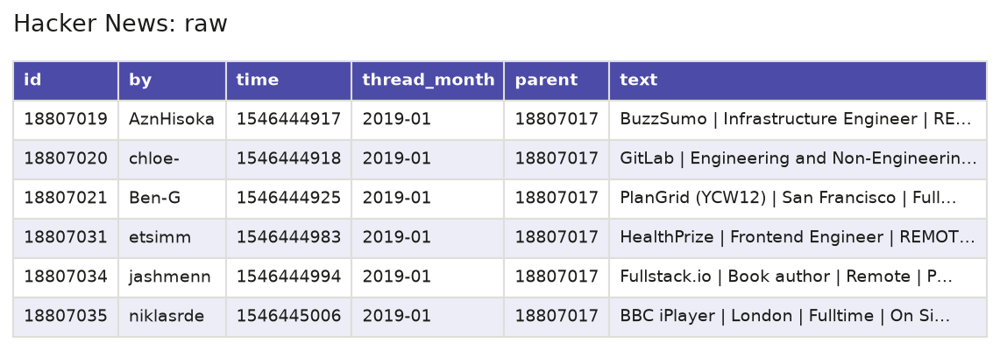
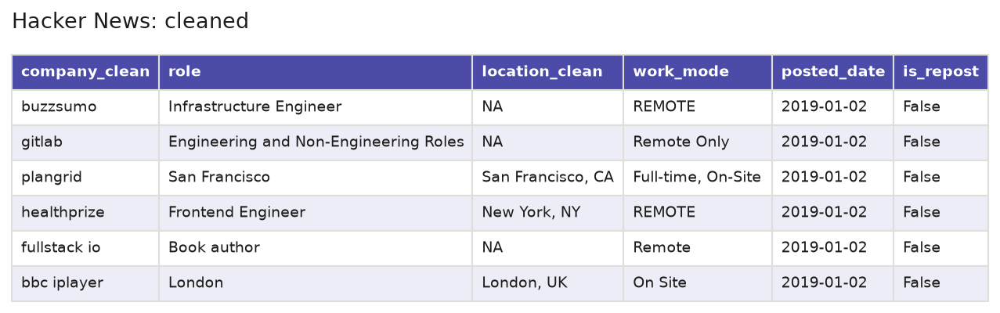
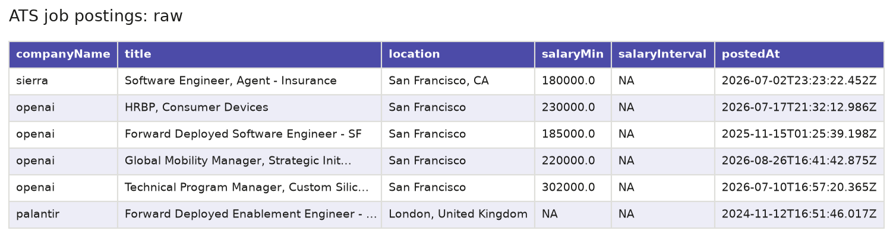
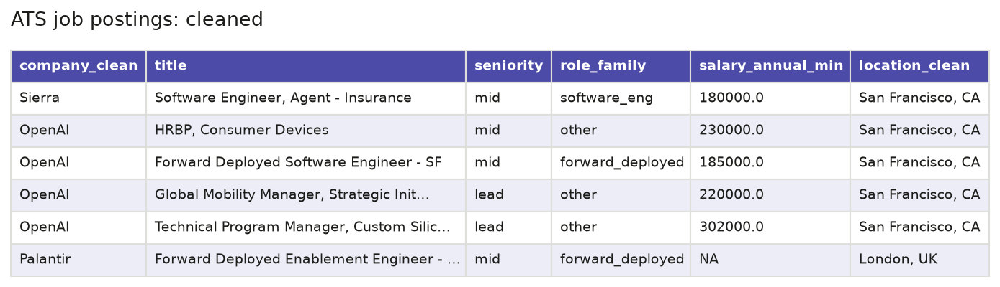

DataPrep_EDA
Data Sources
| Source | Type | What it gives | Records | Dates covered | Licence | Accessed |
|---|---|---|---|---|---|---|
| Hacker News “Who is hiring?” | API | Job posts left as comments on the monthly “Ask HN: Who is hiring?” threads | 52,040 posts from 93 monthly threads | Jan 2019 to Sep 2026 | No data licence published. Posts belong to their authors. | 2026-09-07 |
| ATS job boards via Apify | API | Job posts from the hiring pages of 19 AI and software companies on Ashby, Greenhouse and Lever | 4,409 rows, 4,294 unique jobs | Dec 2009 to Sep 2026. 83% were posted in 2026. | Apify terms of use. Posts belong to the companies. | 2026-09-07 |
| Indeed Hiring Lab | Download | Daily job postings index (Feb 2020 = 100) for the US by sector, state and metro area, plus the share of AI job posts in 9 countries | 1,801,661 rows in 5 files | Feb 2020 to Aug 2026. AI share: Jan 2019 to Jul 2026. | CC BY 4.0 | 2026-09-08 |
| BLS | API | Monthly JOLTS openings, hires, quits and layoffs (12 series), CES employment (2 series) and one year of OEWS figures (8 series) | 1,956 rows in 22 series | Jan 2015 to Aug 2026 | Public domain (US government data) | 2026-09-08 |
| OEWS annual files | Download | Yearly national employment and wages for every occupation | 9,670 rows in 7 files | 2019 to 2025, one file per year | Public domain (US government data) | 2026-09-07 |
APIs Used
Hacker News Search API (Algolia)
- Documentation: https://hn.algolia.com/api
- Endpoint:
GET https://hn.algolia.com/api/v1/search_by_date - Used to find the monthly “Who is hiring?” threads.
curl "https://hn.algolia.com/api/v1/search_by_date?query=Ask%20HN%3A%20Who%20is%20hiring&tags=story,author_whoishiring&hitsPerPage=100"Hacker News API (Firebase)
- Documentation: https://github.com/HackerNews/API
- Endpoint:
GET https://hacker-news.firebaseio.com/v0/item/{id}.json - Used to download each thread and every job post in it.
curl "https://hacker-news.firebaseio.com/v0/item/18807017.json"Apify API
- Documentation: https://docs.apify.com/api/v2/actor-run-sync-get-dataset-items-post
- Endpoint:
POST https://api.apify.com/v2/acts/scrapesage~multi-ats-job-scraper/run-sync-get-dataset-items - Used to run the job board scraper and get the job posts back in the same request. It needs an Apify token.
curl -X POST "https://api.apify.com/v2/acts/scrapesage~multi-ats-job-scraper/run-sync-get-dataset-items" \
-H "Authorization: Bearer $APIFY_TOKEN" \
-H "Content-Type: application/json" \
-d '{
"companies": ["greenhouse:anthropic", "ashby:openai"],
"maxItems": 200,
"maxItemsPerCompany": 50,
"includeCompensation": true,
"includeDescription": true,
"includeRawData": false,
"onlyNewItems": false,
"proxyConfiguration": {"useApifyProxy": true}
}'BLS Public Data API (v2)
- Documentation: https://www.bls.gov/developers/api_signature_v2.htm
- Endpoint:
POST https://api.bls.gov/publicAPI/v2/timeseries/data/ - Used to download the JOLTS, CES and OEWS series. A free registration key raises the request limits.
curl -X POST "https://api.bls.gov/publicAPI/v2/timeseries/data/" \
-H "Content-Type: application/json" \
-d '{
"seriesid": ["JTS510000000000000JOL"],
"startyear": "2015",
"endyear": "2026",
"registrationkey": "YOUR_BLS_API_KEY"
}'Raw Data Access
| Source | Where it came from | How to get it again |
|---|---|---|
| Hacker News | “Who is hiring?” threads | fetch_hn.py |
| ATS job boards | Apify multi-ATS job scraper | fetch_apify.py |
| Indeed Hiring Lab | job_postings_tracker and ai-tracker on GitHub | Clone the two repositories |
| BLS | BLS Public Data API | fetch_bls.py |
| OEWS annual files | OEWS data tables | Download the national XLSX file for each year |
The raw files are not stored in version control. They take up about 300 MB, which is too large for the repository. The fetch scripts in src/ download the Hacker News, job board and BLS data again. The Indeed and OEWS files have no fetch script, so they are downloaded from the links in the table. The job board script saves JSON, while the cleaning script reads CSV exports of the same data.
Small samples of the raw and cleaned data are stored in data/samples/:
- hn_raw_sample.json: 20 raw Hacker News posts
- hn_clean_sample.csv: the same 20 posts after the first cleaning step
- hn_parsed_sample.csv: the same 20 posts, sorted by date, as the second cleaning step reads them
- hn_cleaned_sample.csv: the same 20 posts after the second cleaning step
- ats_raw_sample.csv: 20 raw job board rows
- ats_clean_sample.csv: the same 20 rows after the first cleaning step
- ats_final_sample.csv: the same 20 rows after the second cleaning step
Code
| Script | What it does | Language | Main packages |
|---|---|---|---|
| fetch_hn.py | Finds the monthly “Who is hiring?” threads and downloads every job post in them. | Python 3.12 | httpx, tqdm |
| fetch_apify.py | Runs the Apify job board scraper for one group of companies and saves the posts. | Python 3.12 | requests, python-dotenv |
| fetch_bls.py | Downloads the JOLTS, CES and OEWS series from the BLS API. | Python 3.12 | requests, python-dotenv |
| clean_hn.py | Reads the raw Hacker News posts and splits each one into company, role, location and other fields. | Python 3.12 | pandas |
| clean_hn_stage2.py | Fills in missing work mode and location, cleans company and place names, and flags junk and repeat posts. | Python 3.12 | pandas |
| clean_ats.py | Joins the four job board files, drops duplicate jobs, and adds seniority and role family. | Python 3.12 | pandas |
| clean_ats_stage2.py | Recovers city and region, groups locations, and flags near duplicates and unusual description lengths. | Python 3.12 | pandas |
| clean_indeed.py | Reshapes the Indeed files into one row per date and series, and flags gaps, duplicates and outliers. | Python 3.12 | pandas |
| clean_bls.py | Turns the BLS API responses into tables, and flags gaps, duplicates and outliers. | Python 3.12 | pandas |
| clean_oews_files.py | Pulls six occupations out of the yearly OEWS files and builds one table for 2019 to 2025. | Python 3.12 | pandas, openpyxl |
| plotstyle.py | Holds the shared chart colours and style, and saves each figure with a thumbnail. | Python 3.12 | matplotlib |
| make_sample_images.py | Draws the raw and cleaned sample files as table images for this page. | Python 3.12 | pandas, matplotlib |
Raw and Cleaned Data




Cleaning Pipeline
| Source | Rows in | Rows out | What was removed | What was flagged |
|---|---|---|---|---|
| Hacker News | 52,040 | 48,296 | 3,744 deleted or dead comments | 233 junk posts, 17,538 reposts, 242 very long posts |
| ATS job boards | 4,409 | 4,294 | 115 duplicate job IDs. 5 empty columns and 38 scraper-only columns. | 933 near duplicates, 12 suspect salaries, 43 very short and 43 very long descriptions |
| Indeed Hiring Lab | 1,801,661 | 1,801,661 | Nothing | 9,010 outliers (more than 3 standard deviations from their series mean), 12 values outside the 0 to 500 range |
| BLS | 1,956 | 1,956 | Nothing | 12 JOLTS outliers |
| OEWS annual files | 9,670 | 33 | Rows for all occupations outside the six studied | 1 top-coded wage, 3 year-over-year changes above 20% |
{kind=link}
{kind=link}
{kind=link}
{kind=link}
{kind=link}
{kind=link}
{kind=link}
{kind=link}
{kind=link}
{kind=link}
{kind=link}